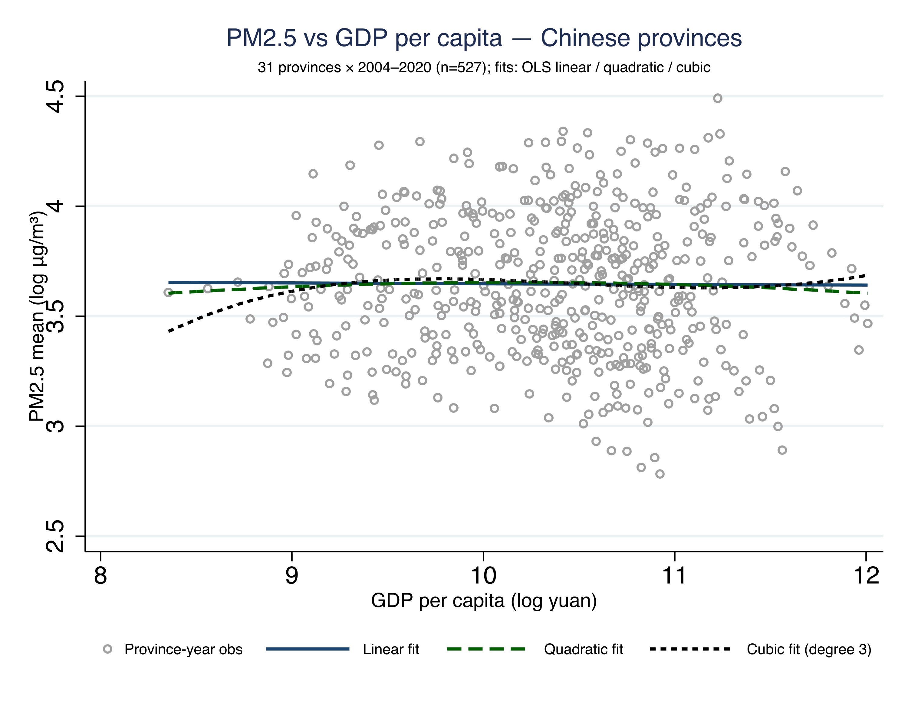
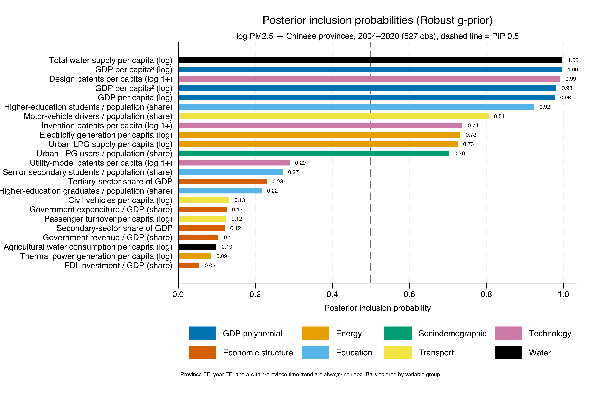
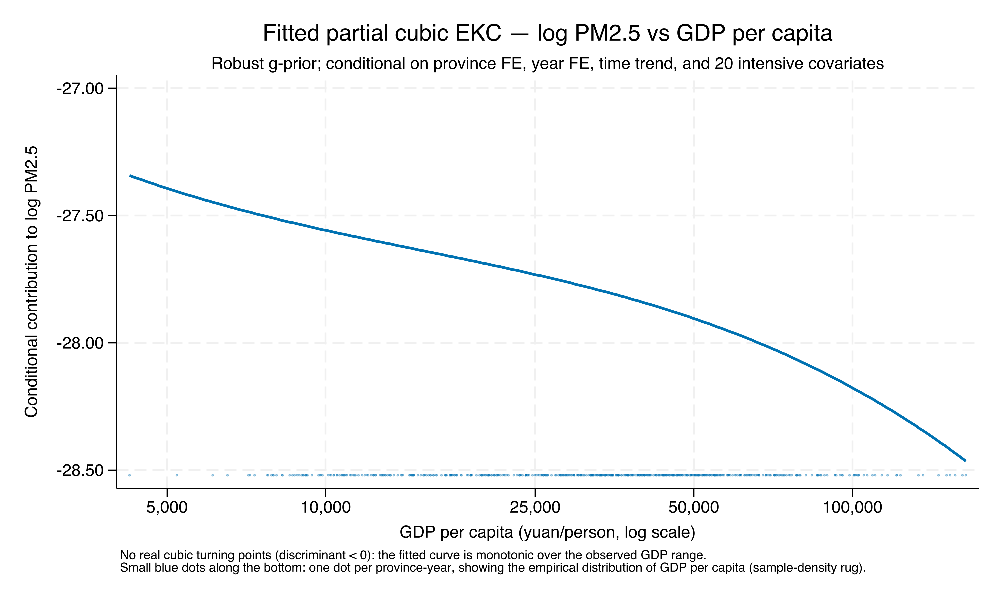
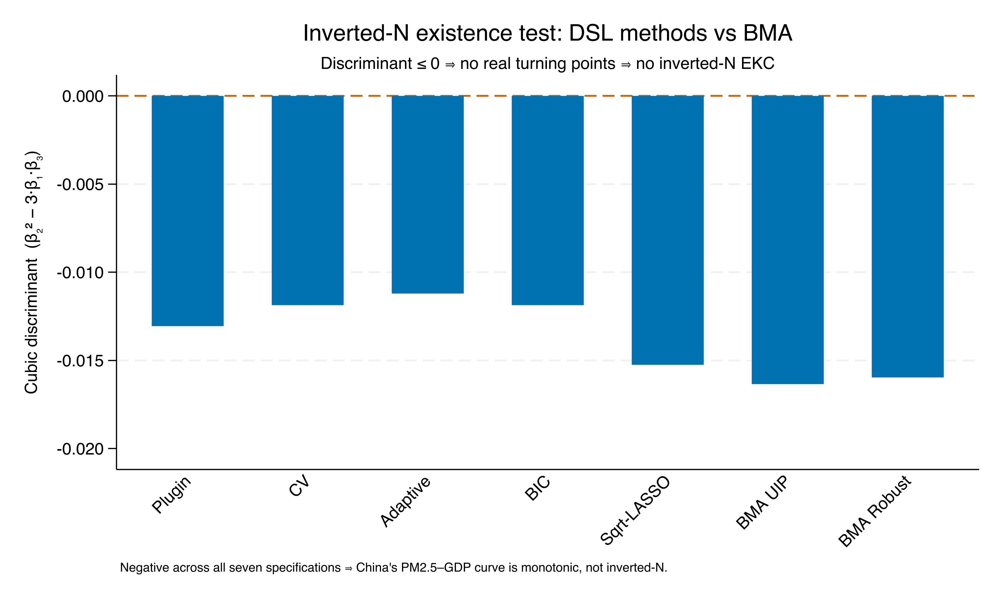
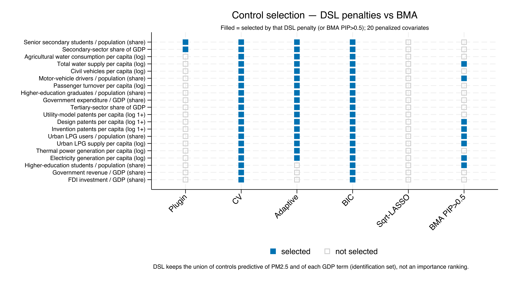
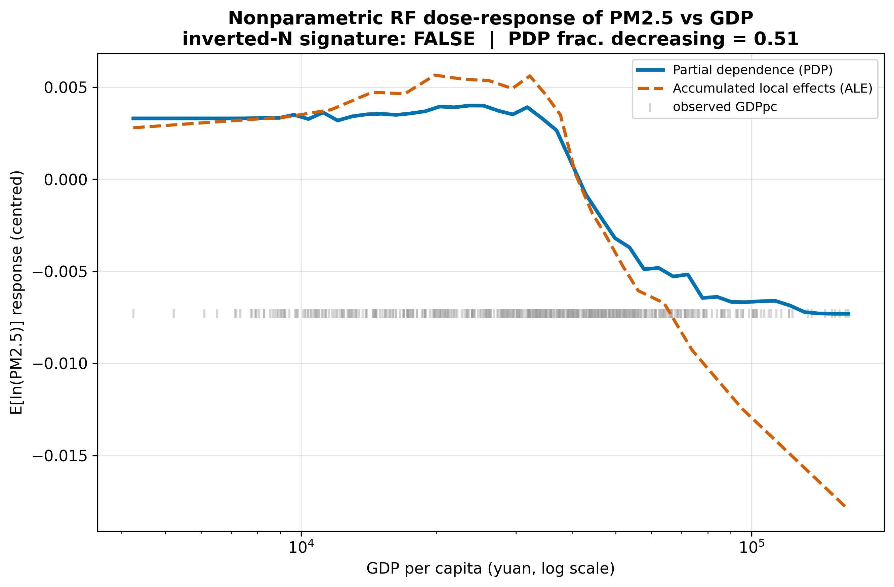
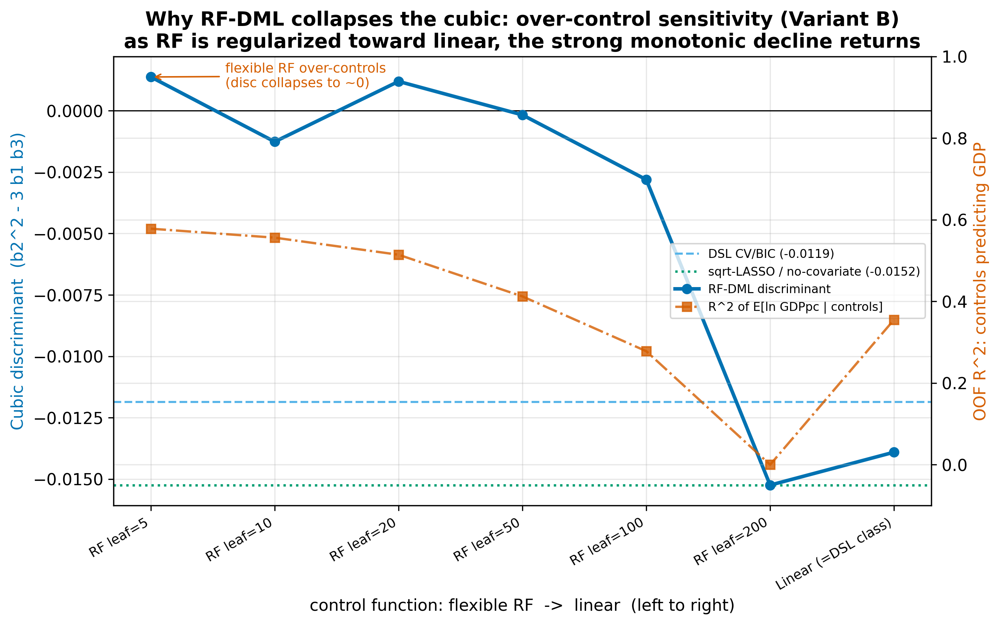
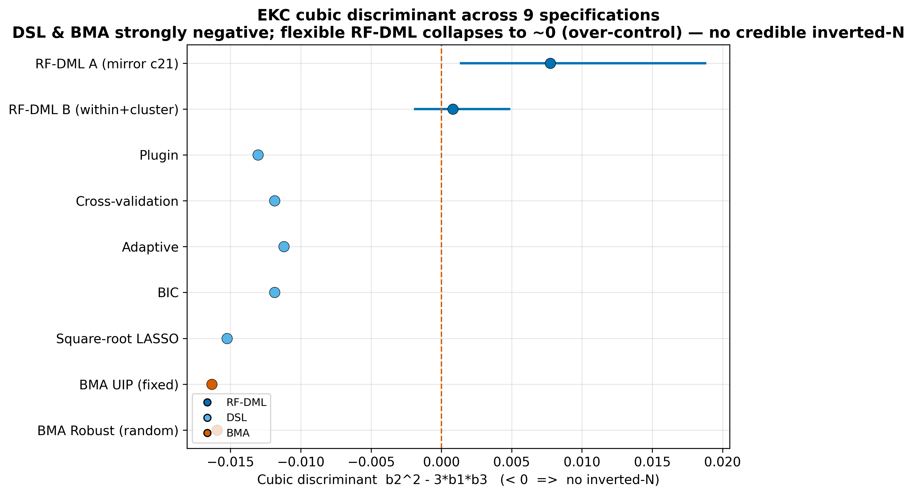

Across 84 countries, the EKC bends twice — an inverted-N
Gravina & Lanzafame (2025) re-estimate the Environmental Kuznets Curve with Bayesian Model Averaging and Double-Selection LASSO, and find a robust inverted-N for CO₂: pollution rises, falls, then rises again — turning points near $1,273 and $41,509.
The question for this project: does that two-hump shape reappear when the variation is 31 provinces of one country — Chinese PM2.5 — instead of 84 economies?
Same machinery, new setting: we ask whether China’s PM2.5–income curve bends, or only falls.
One number decides the shape: the cubic discriminant
\[D = \beta_2^2 - 3\,\beta_1\beta_3\]
where \(\beta_1,\beta_2,\beta_3\) are the linear, quadratic, and cubic GDP coefficients.
\(D < 0\) → the slope never reaches zero → a monotonic curve (no inverted-N). \(D > 0\) with turning points inside the data → the inverted-N / U signature.
Watch \(D\): every method in this talk is just a different way to estimate its sign.
The raw cloud already leans monotonic — no visible hump

527 province-years; the linear, quadratic, and cubic OLS fits are all nearly flat — no rise-then-fall.
Before any controls, the descriptive cubic barely bends — the eye sees decline, not a hump.
Three paradigms, one discriminant
Act II
We climb a ladder of assumptions
Bayesian Model Averaging — average the cubic over ~9,000 candidate models.
Double-Selection LASSO — force the cubic in, let LASSO pick the controls, estimate frequentist.
Random-Forest Double ML — replace linear controls with nonparametric trees.
If \(D\) stays negative as we weaken the assumptions at each rung, the shape is real — not an artifact of one machine.
BMA: all three GDP terms are decisive — PIP ≈ 1.0

Posterior inclusion probabilities; the three GDP polynomial terms (blue) sit at the top, PIP ≈ 1.
The cubic is genuinely present — the model cannot drop the GDP terms as noise.
The fitted BMA cubic only ever descends — discriminant −0.016

Conditional on province FE, year FE, a time trend, and 20 covariates, the partial cubic declines across the whole range.
No inverted-N under BMA: richer provinces have lower conditional PM2.5, with no interior turning point.
The verdict is not a knife-edge — both priors, same negative D
BMA g-prior
\(\beta_1\)
\(\beta_2\)
\(\beta_3\)
Discriminant
Shape
UIP (fixed)
−8.50
0.863
−0.0298
−0.0163
monotonic
Robust (random)
−8.24
0.837
−0.0290
−0.0160
monotonic
Two priors, the same (−, +, −) cubic and the same negative discriminant — the Bayesian result is stable.
A Bayesian result deserves a frequentist witness
BMA
Averages the cubic over ~9,000 models
Posterior inclusion probabilities
Bayesian g-priors
Double-Selection LASSO
Forces the GDP cubic in
LASSO selects the controls
Post-selection OLS, 5 penalties
If a completely different paradigm agrees, the shape is method-independent; if it disagrees, that disagreement is the story.
Five DSL penalties, five negative discriminants

Cubic discriminant for the five DSL penalties and both BMA priors — all seven bars below zero.
Every frequentist penalty lands on the same side of zero as the Bayesian average — no inverted-N.
The shape is invariant to the controls — even zero of them

Which of the 20 covariates each penalty keeps: from keep-all (CV/BIC) to keep-none (sqrt-LASSO).
You cannot select a control set that rescues the inverted-N — it is not there to rescue.
Both methods fit the controls linearly — do trees agree?
The final rung swaps linear/LASSO controls for a Random Forest: a joint-cubic partialling-out Double ML that residualizes the GDP cubic against a nonparametric control function, cross-fitted province-by-province.
It relaxes the linearity of everything except the GDP cubic of interest — the strongest test we can run.
Let a flexible learner absorb the controls, then re-ask the shape without a linear straitjacket.
With no functional form imposed, still no inverted-N

Form-free RF dose-response (PDP solid, ALE dashed): flat then declining. Inverted-N signature: FALSE.
The strongest, assumption-light test agrees: flat-then-falling, no interior min-then-max — no inverted-N.
The strongest objection — and the answer
Objection. A very flexible forest drives the parametric discriminant to ≈ 0 (even faintly positive) — is the inverted-N hiding after all?
Response. No — that is bad-control bias. The covariates (energy, vehicles, patents) are mediators of GDP; a flexible forest predicts the GDP terms from them at R² ≈ 0.95 and absorbs GDP’s own signal. Regularize the forest — or drop the mediators — and the discriminant snaps back to −0.0152.
The near-zero discriminant is a mediator-over-control artifact, not a turning point.
Regularize the forest and the decline returns

Regularize the RF toward linear (left → right) and the strong monotonic decline returns — the largest-leaf forest reproduces the sqrt-LASSO zero-covariate value (−0.0152) exactly.
Magnitude is specification-dependent; the no-inverted-N sign is not.
The verdict
Act III
Nine specifications, three paradigms — no credible inverted-N

Discriminant across all nine specs: DSL/BMA strongly negative; flexible RF-DML collapses to ~0 (over-control), never credibly positive.
Bayesian, frequentist, and nonparametric machinery all reject the inverted-N — the result is method-independent.
No inverted-N: PM2.5 falls monotonically with income
−0.016
cubic discriminant on GDP per capita — negative across every linear-nuisance method, and no inverted-N signature under trees
Why China differs: the post-peak tail of a global inverted-N
Reading 1 — position
2004–2020 provinces may sit past the low-income turning point (~$1,273)
We observe only the descending segment of a global inverted-N
Reading 2 — heterogeneity
Within-China lacks the institutional / policy spread across countries
No regulatory-regime differences to generate the early upswing
A genuine cross-setting finding, not a replication failure — the BMA/DSL machinery replicates faithfully; only the shape differs.
Suggested next steps
A comparative predictor-importance ranking — line up BMA posterior inclusion probabilities, the DSL selection map, and the tree learners’ importances on one scale. Do spatial lags of GDP belong in the candidate set?
SHAP for global interpretation — Shapley additive explanations put every model’s predictors in one comparable currency, panel-wide.
SHAP for localized interpretation — province-year attributions: where the panel-wide story fits, and which provinces it misses.
The shape verdict is settled — the open question is which predictors carry it, and SHAP is the common language for asking.
Across countries, CO₂ bends twice; within China, PM2.5 only falls.